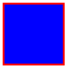

Week08
Readings:
HTML5 & CSS3 for the Real World: 2nd Edition
Chapter 8: Transforms and Transitions
Notes:
The transform property, introduced in CSS3, applies a 2D or 3D transformation to an element. This textbook only covers the 2D transformation applied to an element. This property allows the programmer to translate, rotate, scale, and/or skew any element on the page. While some of these effects were possible using previously existing CSS features (such as translating with relative and absolute positioning), CSS3 gives unprecedented control over many more aspects of the element's appearance.
The programmer can manipulate an elements appearance using transform functions. The value of the transform property is one or more transform functions (separated by spaces) that will be applied in the order they're provided. With the CSS transform property, the programmer can use the following 2D transform methods:
- translate()
- scale()
- rotate()
- skew()
The translate() method moves an element from its current position (according to the parameters given for the X-axis and the Y-axis) without impacting the flow of the document. In the following example, the translate(x,y) function moves an element x from the left, and y from the top:
transform: translate(45px, -45px);
Transforms require vendor prefixing for IE9, Android up to 4.4.3, iOS8, and Blackberry 10. To make the aforementioned code work in IE9 and older mobile WebKit browsers, the following must be included:
-webkit-transform: translate(45px,-45px); /* iOS8, Android 4.4.3, BB10 */
-ms-transform: translate(45px,-45px); /* IE9 only */
transform: translate(45px,-45px);
If the programmer wants to move an element vertically or horizontally, the translateX or translateY functions can be used respectively. To move 45px to the right along the x axis, include:
transform: translateX(45px);
To move up along the y axis by 30px, include:
transform: translateY(-30px);
The scale() method increases or decreases the size of an element (according to the parameters given for the width and height). The scale(x,y) function scales an element by the defined factors horizontally then vertically. If only one value is provided, it will be used for both the x and y values, growing or shrinking your element or pseudo-element while maintaining the original aspect ratio. For example, scale(1) would leave the element the same size, scale(2) would double its proportions, scale(0.5) would halve them, and so on. Providing different values will distort the element, as expected:
transform: scale(1.5, 0.25);
The following example increases the ‹div› element to be two times of its original width, and three times of its original height:
div {
transform: scale(2, 3);
}
As with translate, the scaleX(x) or scaleY(y) functions can also be used. These functions will scale only the horizontal dimensions or only the vertical dimensions respectively.
A scaled element will grow outwards from or shrink inwards towards its center; in other words, the element's center will stay in the same place as its dimensions change. To change this default behavior, the transform-origin property can be included.
To declare multiple transformations, the programmer must provide a space-separated list of transform functions. Example:
transform: translateX(40px) scale(1.5);
The rotate() method rotates an element clockwise or counter-clockwise according to a given degree. The rotate() function rotates an element around the point of origin by a specified angle value. As with scale, by default the point of origin is the element's center. Generally, angles are declared in degrees, with positive degrees moving clockwise and negative moving counterclockwise. In addition to degrees, values can be provided in grads, radians, or turns.
The following example rotates the ‹div› element clockwise with 20 degrees:
div {
transform: rotate(20deg);
}
The skew(x,y) function specifies a skew along the x and y axes. The x specifies the skew on the x axis, and the y specifies the skew on the y axis. If the second parameter is omitted, the skew will only occur on the x axis:
transform: skew(15deg, 4deg);
As with translate and scale, there are axis-specific versions of the skew transform: skewX() and skewY().
Transitions allow the values of CSS properties to change over time, essentially providing simple animations. For example, if a link changes color on hover, the programmer can have it gradually fade from one color to the other instead of a sudden change. They're both transitions, but with the CSS transition property the color transition can be gradual. If the browser lacks support for transitions, the change will be immediate instead of gradual, which is fine and accessible.
Here are the steps to create a simple transition using only CSS:
- Declare the original state of the element in the default style declaration.
- Declare the final state of your transitioned element; for example, a :hover state.
- Include the transition functions in your default style declaration using the transition properties, including: transition-property, transition-duration, transition-timing-function, and transition-delay.
The transition-property property specifies the name of the CSS property the transition effect is for (the transition effect will start when the specified CSS property changes). For example, a transition effect could typically occur when a user hover over an element.
Any property changing from one value to another for which the programmer can find a valid midpoint can be transitioned. For example, in transitioning from a 1px red border to a 15px blue border, the programmer transitions the color and width of the border. The midpoint of 1px and 15px is obvious (8px), so that is a transitionable property value. The midpoint between red and blue might not seem obvious, but the browser converts named colors to their numeric values, which have a midpoint. If the border-style were declared as changing from solid to dashed, that would not be a transitionable property as there is no midpoint between these key terms.
It is important to include a pre-state and a post-state. For example, to transition from rectangular corners to rounded corners, set the original state to border-radius: 0;.
The exception to this “if there is a valid midpoint, it can be transitioned” rule is visibility: although there is no valid midpoint between the values visible and hidden, when transitioned, the value changes at the endpoint of the transition.
Any number of CSS properties can be provided to the transition-property declaration, separated by commas. Alternatively, the programmer can use the keyword all to indicate that every supported property should be animated as it transitions. For example, the transition can be applied to the transform property:
transition-property: transform;
To animate each property, use the default value for all. To transition more than one property, but not all, comma-separate them. Example:
.foo {
transition-property: transform, color;
}
In itself, the transition-property property has no effect; that's because it is necessary to specify the duration of the transition.
The transition-duration property sets how long the transition will take: the duration of time it takes to go from the default state to the transitioned state. It can be specified either in seconds (s) or milliseconds (ms). Example animation with transition-duration set to 0.2 seconds (0.2 s) or 200 milliseconds (200 ms):
transition-duration: 0.2s;
The transition-timing-function allows the programmer to control the pace of the transition in even more granular detail. This property specifies the speed curve of the transition effect.
The transition-timing-function property can have the following values:
- ease - specifies a transition effect with a slow start, then fast, then end slowly (this is default)
- linear - specifies a transition effect with the same speed from start to end
- ease-in - specifies a transition effect with a slow start
- ease-out - specifies a transition effect with a slow end
- ease-in-out - specifies a transition effect with a slow start and end
- cubic-bezier(n,n,n,n) - lets you define your own values in a cubic-bezier function
An example of using the transition-timing-function property:
transition-timing-function: ease-out;
This makes the transition fast to start with, becoming slower as it progresses.
The transition-delay property specifies a delay (in seconds or milliseconds) for the transition effect before the transition begins. An example of including the number of milliseconds (ms) for transition delay:
-webkit-transition-delay: 50ms;
transition-delay: 50ms;
The transition property is a shorthand for the four transition properties just described, which can be used to combine all of these values into a shorthand declaration:
transition: transform 0.2s ease-out 50ms;
Transitions animate elements over time; however, they're limited in what they can do. The programmer can define starting and ending states, but there's no fine-grained control over any intermediate states. CSS animations, unlike transitions, allow to control each step of an animation via keyframes.
A keyframe is a snapshot that defines a starting or end point of any smooth transition. With CSS transitions, the programmer is essentially limited to defining a first and a last keyframe. CSS animations allow to add any number of keyframes in between, to guide animation in more complex ways.
To animate an element in CSS, first it is necessary to create a named animation, then attach it to an element in that element's property declaration block. Animations in themselves don't do anything; in order to animate an element, the programmer needs to associate the animation with that element.
To create an animation, it is necessary to use the @keyframes rule for IE10+ and FF16+ and include @-webkit-keyframes for all WebKit implementations followed by a name of programmer's choosing, which will serve as the identifier for the animation. Then, the programmer can specify his keyframes.
For an animation called myAnimation, the @keyframes rule would look like this:
@-webkit-keyframes myAnimation {
/* put animation keyframes here */
}
@keyframes myAnimation {
/* put animation keyframes here */
}
Each keyframe looks like its own nested CSS declaration block. Instead of a traditional selector, though, a percentage value is used, or a comma-separated list of percentage values. There are two keyterms― from and to ―which evaluate to 0% and 100% respectively. These values specify how far along the animation each keyframe is located.
Inside each keyframe the programmer includes the properties he wants to animate, along with the animated values. The values will be smoothly interpolated by the browser's animation engine between each keyframe.
Keyframes can be specified in any order; it's the percentage values rather than the order of the declarations that determine the sequence of keyframes in the animation.
Here are a few simple animations:
@keyframes moveRight {
from {
transform: translateX(-50%);
}
to {
transform: translateX(50%);
}
}
@keyframes appearDisappear {
0%, 100% {
opacity: 0;
}
20%, 80% {
opacity: 1;
}
}
@keyframes bgMove {
100% {
background-position: 120% 0;
}
}
The second animation applied the same styles to 0% and 100%, and to 20% and 80%. In this case, it means the element will start out invisible (opacity: 0;), fade in to visible by 20% of the way through the duration, remain visible until 80%, then fade out.
Three animations have been created, but nothing in our document will animate yet. An element must have at minimum an animation name for there to be an animation, and must also have a duration declared for the animation to be perceptible. Once the keyframe animations is defined, the next step is to apply it to one or more elements using the various animation properties.
The animation properties, given that the programmer would need two declarations for each property since the -webkit- prefix is still required in WebKit browsers, are as follows:
animation-name
This property is used to attach an animation (previously defined using the @keyframes syntax) to an element:
animation-name: appearDisappear;
The animation-duration property defines the length of time (in seconds or milliseconds) an animation takes to complete one iteration (all the way through, from 0% to 100%):
animation-duration: 300ms;
While animation-name is the only required animation property to create an animation, the animation-duration should be considered required to animate an element. Without declaring the duration it defaults to 0s, which is imperceptible, but still fires the animationstart and animationend events. The other animation properties, while they enable to better control your animation, are optional.
Like the transition-timing-function property, the animation-timing-function determines how the animation will progress over its duration. The options are the same as for transition-timing-function: ease, linear, ease-in, ease-out, ease-in-out, a developer-defined cubic-bezier() function, step-start, step-end, or a developer-defined number of steps with the steps(number, direction) function. Example:
animation-timing-function: linear;
The animation-iteration-count property allows to define how many times the animation will play through. The value is generally an integer, but numbers with decimal points can also be used (in which case, the animation will end partway through an iteration), or the value infinite for endlessly repeating animations. If omitted, it will default to 1, in which case the animation will occur only once. The following is an example of using this property:
animation-iteration-count: infinite;
The animation-direction property specifies whether an animation should be played forwards, backwards or in alternate cycles.
The animation-direction property can have the following values:
- normal - The animation is played as normal (forwards). This is default
- reverse - The animation is played in reverse direction (backwards)
- alternate - The animation is played forwards first, then backwards
- alternate-reverse - The animation is played backwards first, then forwards
The animation-delay property is used to define how many milliseconds or seconds to wait before the browser begins the animation:
animation-delay: 50ms;
CSS animations do not affect an element before the first keyframe is played or after the last keyframe is played. The animation-fill-mode property can override this behavior.
The animation-fill-mode property specifies a style for the target element when the animation is not playing (before it starts, after it ends, or both).
The animation-fill-mode property can have the following values:
- none - Default value. Animation will not apply any styles to the element before or after it is executing
- forwards - The element will retain the style values that is set by the last keyframe (depends on animation-direction and animation-iteration-count)
- backwards - The element will get the style values that is set by the first keyframe (depends on animation-direction), and retain this during the animation-delay period
- both - The animation will follow the rules for both forwards and backwards, extending the animation properties in both directions
The animation-play-state property defines whether the animation is running or paused. A paused animation displays the current state of the animation statically. When a paused animation is resumed, it restarts from the current position. This provides a simple way to control CSS animations from within your CSS or with JavaScript.
Chapter 12: Canvas, SVG, and Drag and Drop
Notes:
The HTML ‹canvas› element is used to draw graphics on a web page using JavaScript. The ‹canvas› element is just a container for graphics. The programmer must use JavaScript to draw graphics. With canvas, it is possible draw shapes and lines, arcs and text, gradients and patterns. In addition, canvas gives the power to manipulate pixels in images and even video.
The first step to using canvas is to add a canvas element to the page and giving canvas an ID (to be referred to in a script), and a width and height attribute to define the size of the canvas:
‹canvas id="myCanvas" class="myCanvas" width="200" height="200"›
Sorry! Your browser doesn't support Canvas.
‹/canvas›
The text in between the canvas tags will only be shown if the canvas element is not supported by the visitor's browser.
Canvas has no default styling, so it's difficult to see where it is on the page unless the programmer gives it some kind of border using some CSS to visually distinguish it on the page:
.myCanvas {
border: dotted 2px black;
}
All drawing on the canvas happens via the Canvas JavaScript API. But first before the programmer can draw onto a canvas, it is necessary to grab hold of the canvas element on the page:
var canvas = document.getElementById("myCanvas");
Once the canvas element is stored in a variable, the programmer then sets up the canvas's context. The context is the place where your drawing is rendered. Currently, there's only wide support for drawing to a two-dimensional context. The W3C Canvas spec defines the context in the Canvas Rendering Context 2D interface. Most of the methods that will be used to draw on the canvas are defined in this interface.
The drawing context is obtained by calling the getContext method and passing it the string "2d", since the drawing will be used in two dimensions:
var canvas = document.getElementById("myCanvas");
var context = canvas.getContext("2d");
On a real-life painting canvas, it is necessary to first saturate your brush with paint before you can begin. In the HTML5 canvas, it is necessary to do the same, and it can be done with the strokeStyle or fillStyle properties. Both strokeStyle and fillStyle are set on a context object, and both take one of three values: a string representing a color, a CanvasGradient object, or a CanvasPattern object.
To draw a rectangle with a red border, it is necessary to first define the stroke color:
var canvas = document.getElementById("myCanvas");
var context = canvas.getContext("2d");
context.strokeStyle = "red";
To draw a rectangle with a red border and blue fill, it is also necessary to define the fill color:
var canvas = document.getElementById("myCanvas");
var context = canvas.getContext("2d");
context.strokeStyle = "red";
context.fillStyle = "blue";
The programmer can use any CSS color value to set the stroke or fill color, as long as he specifies it as a string: a hexadecimal value such as #00FFFF, a color name such as red or blue, or an RGB value such as rgb(0, 0, 255). The property rgba can even be used to set a semitransparent stroke or fill color.
The following example will change a blue fill to blue with a 50% opacity:
var canvas = document.getElementById("myCanvas");
var context = canvas.getContext("2d");
context.strokeStyle = "red";
context.fillStyle = "rgba(0, 0, 255, 0.5)";
Once the stroke and fill color is determined, the programmer is ready to start drawing by starting to draw a rectangle. The programmer can repeat the steps he just took: grabbing the canvas and the context, and setting a fill and stroke style. But now, he'll draw a rectangle. The programmer can do this by calling the fillRect and strokeRect methods. Both of these methods take the X and Y coordinates where you want to begin drawing the fill or the stroke, and the width and height of the rectangle. The following example will add the stroke and fill 10 pixels from the top and 10 pixels from the left of the canvas's top-left corner:
var canvas = document.getElementById("myCanvas");
var context = canvas.getContext("2d");
context.strokeStyle = "red";
context.fillStyle = "rgba(0, 0, 255, 0.5)";
context.fillRect(10, 10, 100, 100);
context.strokeRect(10, 10, 100, 100);
This will create a semitransparent blue rectangle with a red border, like in the image below:
The coordinate system in the canvas element is different from the Cartesian coordinate system in mathematics. In the canvas coordinate system, the top-left corner is (0,0). If the canvas is 200 pixels by 200 pixels, then the bottom-right corner is (200,200), as shown in the image below:
It is also possible to draw images onto the canvas element. This example will be redrawing onto the canvas an image that already exists on the page. For the sake of illustration, the HTML5 logo will be used as our image for the example. Let's start by adding it to our page in an img element:
‹h2›Demo 6: Drawing an image to the canvas‹/h2›
‹canvas width="200" height="200" id="demo6" class="myCanvas"›
Sorry! Your browser doesn't support Canvas.
‹/canvas›
‹img data-src="https://learnable-static.s3.amazonaws.com/ premium/reeedr/books/html5 -css3-for-the-real-world-2nd-edition/images/html5-logo.png" id="myImageElem"›
Then, in js file, the programmer will create a new function called drawImageToCanvas in order to redraw the HTML img element onto the canvas. Before the programmer attempt to redraw an HTML img element on the page, he must ensure that the element has loaded. In order to do that, an event listener will be aded that will run our code only once the window's load event has fired:
window.addEventListener("load", drawImageToCanvas, false);
Next, after grabbing the canvas element and setting up the canvas's context, the programmer can grab an image from his page via document.getElementById:
function drawImageToCanvas() {
var canvas = document.getElementById("demo6");
var context = canvas.getContext("2d");
var image = document.getElementById("myImageElem");
}
This will use the same CSS used earlier to make the canvas element's area visible, but with an added margin to space out the canvas and image:
.myCanvas {
border: dotted 2px black;
margin: 0 20px;
}
As a result, the image below shows our empty canvas next to our image:
SVG stands for Scalable Vector Graphics, a specific file format that allows to describe vector graphics using XML. A major selling point of vector graphics in general is that, unlike bitmap images (such as GIF, JPEG, PNG, and TIFF), vector images preserve their quality even as you blow them up or shrink them down. The programmer can use SVG to do many of the same tasks he can do with canvas, including drawing paths, shapes, text, gradients, and patterns.
XML stands for eXtensible Markup Language. Like HTML, it's a markup metalanguage. In plain English, it's a system meant to annotate text. Just as the programmer can use HTML tags to wrap our content and give it meaning, so can XML tags be used to describe data, such as the content of a file.
Drawing a circle in SVG is arguably easier than drawing a circle with canvas. Example:
‹svg xmlns="http://www.w3.org/2000/svg" viewBox="0 0 400 400"›
‹circle cx="50" cy="50" r="25" fill="red"/›
‹/svg›
The viewBox attribute defines the starting location, width, and height of the SVG image. The circle element defines a circle, with cx and cy the X and Y coordinates of the center of the circle. The radius is represented by r, while fill defines the fill style.
To view an SVG file, simply open it via the File menu in any browser that supports SVG. The image below shows what a circle looks like:
Raphaël is an open-source JavaScript library that makes drawing and animating with SVG much easier. Much as with canvas, the programmer can draw images into a container that he creates using Raphaël.
The Drag and Drop API allows to specify that certain elements are draggable, and then specify what should happen when these draggable elements are dragged over or dropped onto other elements on the page.
There are two major kinds of functionality the programmer can implement with Drag and Drop: dragging files from your computer into a web page—in combination with the File API—or dragging elements into other elements on the same page. This chapter is focused on the latter.
There are several steps to adding drag and drop to your page:
- Set the draggable attribute on any HTML elements you'd like to be draggable.
- Add an event listener for the dragstart event on any draggable HTML elements.
- Add an event listener for the dragover and drop events on any elements that you want to have accept dropped items.
- Week 8 Exercises:
-
Chapter 12 - Drawing a rectangle with SVG
This is an example from chapter 12 of drawing a rectangle with SVG.
The programmer can also draw rectangles in SVG, and add a stroke to them as it is possible with canvas.
This time, let's take advantage of SVG being an XML—and thus text-based—file format, and utilize the ‹desc› tag, which allows the programmer to provide a description for the image he is going to draw:
‹svg xmlns="http://www.w3.org/2000/svg" viewbox="0 0 400 400"›
‹desc›Drawing a rectangle‹/desc›
‹/svg›
Next, the programmer populates the ‹rect› tag with a number of attributes that describe the rectangle. This includes the X and Y coordinate where the rectangle should be drawn, the width and height of the rectangle, the fill, the stroke, and the width of the stroke:
‹svg xmlns="http://www.w3.org/2000/svg" viewbox="0 0 400 400"›
‹desc›Drawing a rectangle‹/desc›
‹rect x="10" y="10" width="100" height="100"
fill="blue" stroke="red" stroke-width="3" /›
‹/svg›
As a result, the rectangle looks like the one shown below:
